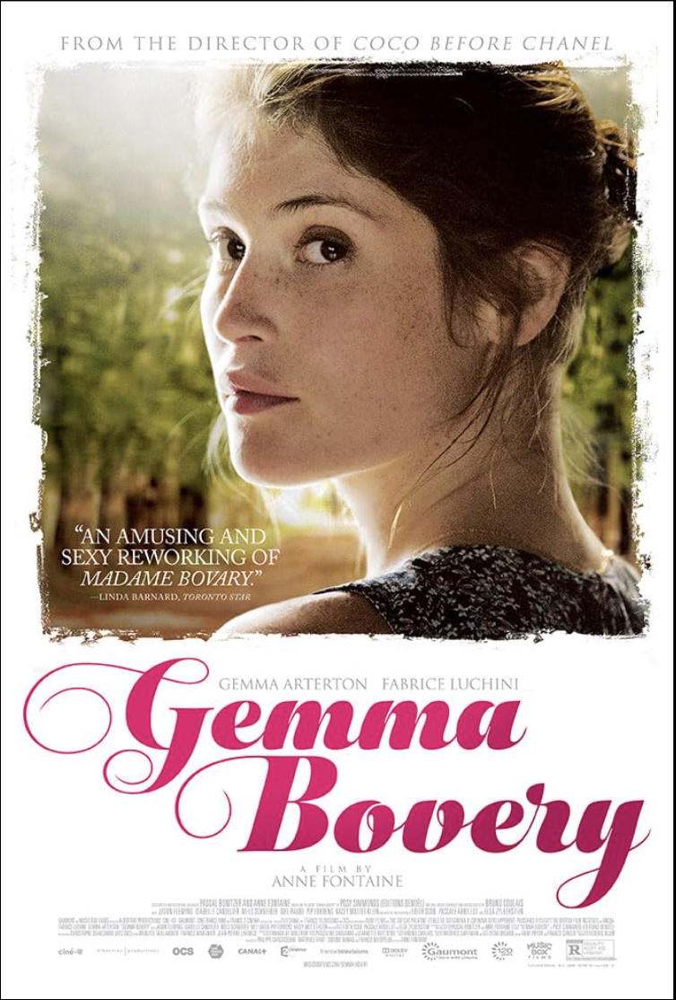

Sarah M.
November 28, 2025
Keywords Used
"Romantic, Countryside, French"
I was looking for something romantic set in the French countryside and Key Away nailed it! The keywords were incredibly accurate. Within seconds, I found "Gemma Bovery" which was EXACTLY what I was in the mood for. No more endless scrolling!
Movie Found:
Gemma Bovery (2014)